第02讲 代数式（单项式、多项式、整式）
课程标准 | 学习目标 |
①单项式、多项式、整式的定义 ②掌握实际问题的数量关系 | 1．理解单项式，多项式和整式的概念，并能判定单项式，多项式和整式； 2．掌握单项式，多项式的系数和次数求法； 3．经历用含有字母的式子表示实际问题数量关系的过程，体会从具体到抽象的认识过程，发展符号意识，数到字母的转变过程。 |

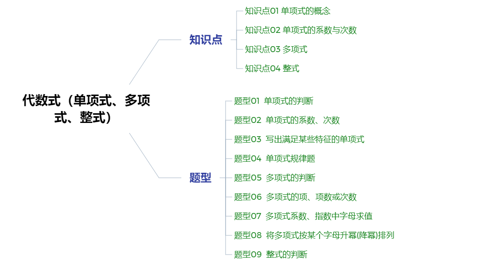

知识点01 单项式的概念
如
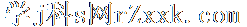
， ，0，它们都是数与字母的积，像这样的式子叫单项式，单独的一个数或一个字母也是单项式．
，0，它们都是数与字母的积，像这样的式子叫单项式，单独的一个数或一个字母也是单项式．【注意】（1）单项式包括三种类型：①数字与字母相乘或字母与字母相乘组成的式子；②单独的一个数；③单独的一个字母．
单项式中不能含有加减运算，但可以含有除法运算．如： 可以写成
可以写成 。但若分母中含有字母，如
。但若分母中含有字母，如
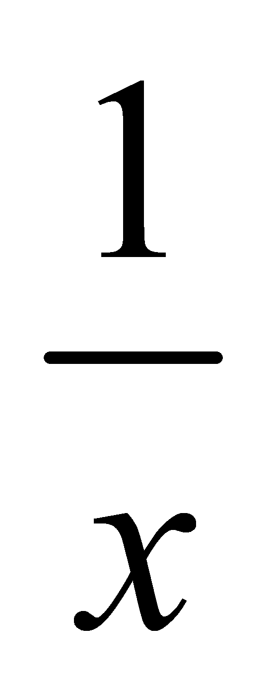
就不是单项式，因为它无法写成数字与字母的乘积．【即学即练1】
1．（23-24六年级下·北京海淀·期中）在代数式 ，
，
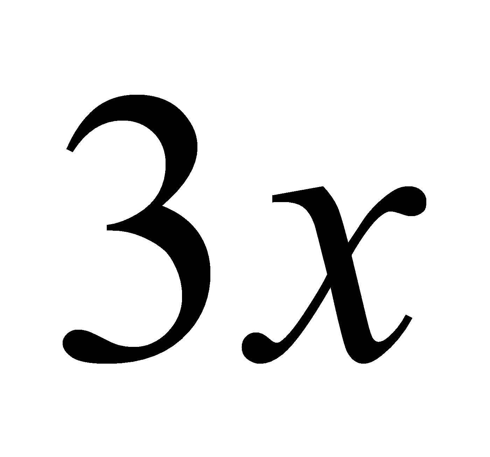
， ，
， ，
， ，
，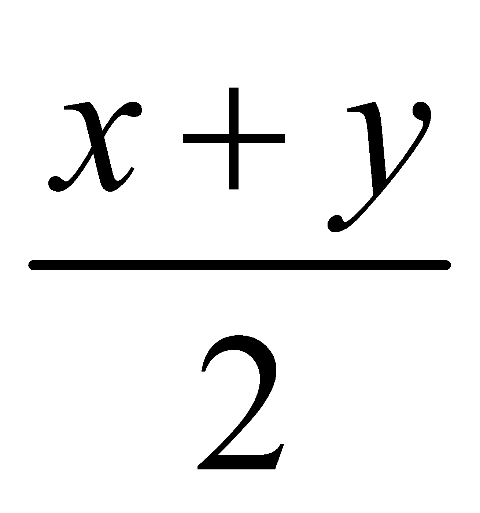
中，单项式的个数是（ ）．A．2个 B．3个 C．4个 D．5个
【答案】C
【分析】本题主要考查了单项式的定义，解题的关键在于能够熟知相关定义：表示数或字母的积的式子叫做单项式，单独的一个数或一个字母也是单项式．
【详解】解：在代数式，，，，，中，单项式有，，，，共4个，
故选：C．
知识点02 单项式的系数与次数
1.单项式的系数：单项式中的数字因数叫做这个单项式的系数．
（1）确定单项式的系数时，最好先将单项式写成数与字母的乘积的形式，再确定其系数；
（2）圆周率π是常数．单项式中出现π时，应看作系数；
（3）当一个单项式的系数是1或-1时，“1”通常省略不写；
（4）单项式的系数是带分数时，通常写成假分数.
2.单项式的次数：一个单项式中，所有字母的指数的和叫做这个单项式的次数．单项式的次数是计算单项式中所有字母的指数和得到的，计算时要注意以下两点：
（1）没有写指数的字母，实际上其指数是1，计算时不能将其遗漏；
（2）不能将数字的指数一同计算．
【即学即练2】
1．（23-24七年级上·贵州铜仁·阶段练习）单项式
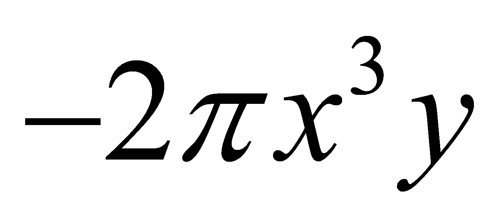
的次数是 ，系数是 ．【答案】 4
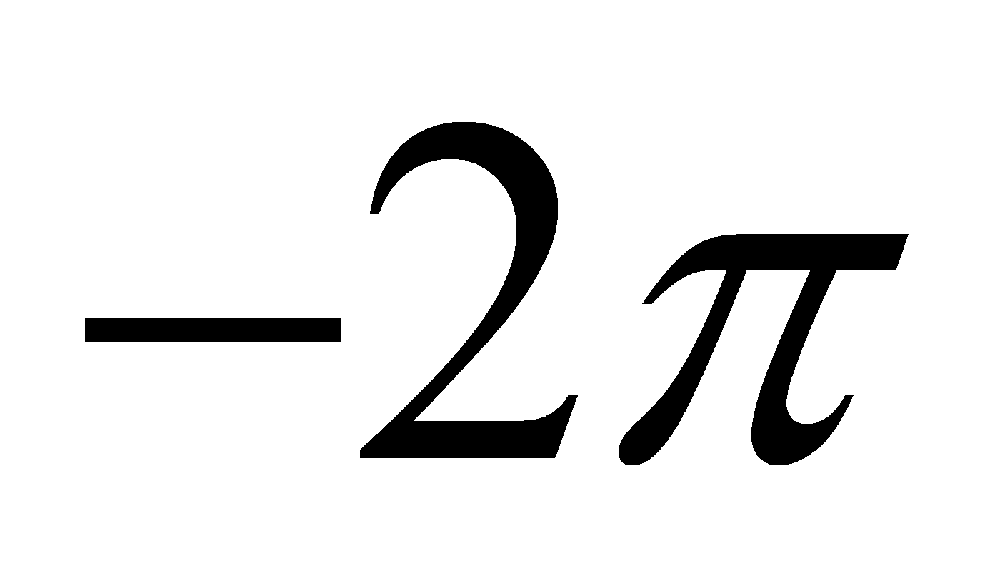
【分析】
本题考查单项式的系数以及次数，单项式中的数字因数就是单项式的系数，单项式中所有字母指数的和就是单项式的次数．
【详解】解：根据单项式次数和系数的定义，可得出的次数为
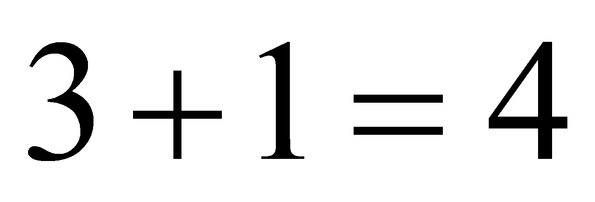
，系数为．
故答案为：4，．
2．（2024·河南周口·三模）请你写出一个系数是2，次数是3的关于x和y的单项式： ．
【答案】
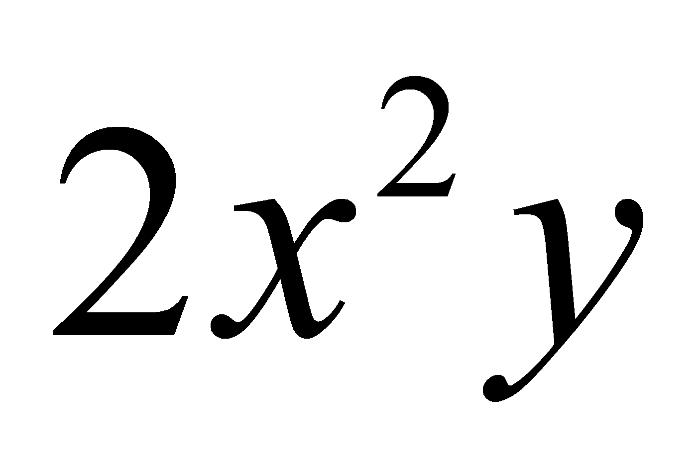
（答案不唯一）【分析】本题考查了单项式的系数、次数的定义，深刻理解定义是解题关键．
根据单项式的系数（单项式中的数字因式）、次数（单项式中所有字母指数的和为单项式的次数）的定义即可得．
【详解】解：由题意，这个单项式可以为，
故答案为：（答案不唯一）．
知识点03 多项式
1.多项式的概念：几个单项式的和叫做多项式．
2. 多项式的项：每个单项式叫做多项式的项，不含字母的项叫做常数项．
【注意】（1）多项式的每一项包括它前面的符号．
（2）一个多项式含有几项，就叫几项式，如：
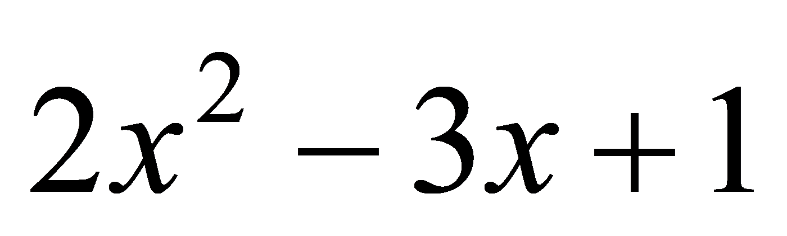
是一个三项式．3. 多项式的次数：多项式里次数最高项的次数，叫做这个多项式的次数．
【注意】（1）多项式的次数不是所有项的次数之和，而是多项式中次数最高的单项式的次数．
一个多项式中的最高次项有时不止一个，在确定最高次项时，都应写出．
【即学即练3】
1．（23-24六年级下·黑龙江哈尔滨·期中）下列说法中正确的是（ ）
A． 是二次三项式 B．
是二次三项式 B． 是三次三项式
是三次三项式
C． 的系数是
的系数是 ，次数是4 D．
，次数是4 D．
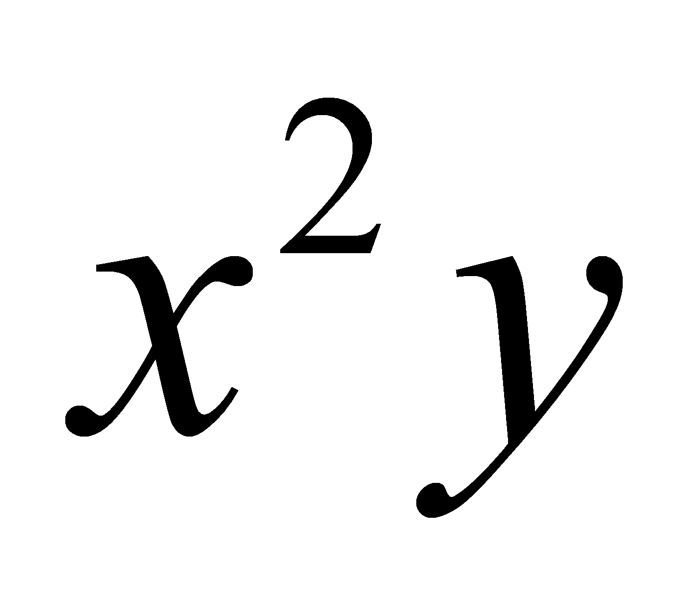
的系数为0，次数为3【答案】C
【分析】本题主要考查了多项式及单项式的定义，解题的关键是熟记定义．运用多项式及单项式的定义求解．
【详解】解：A、是分式，故A选项错误；
B、是二次三项式，故B选项错误；
C、的系数是，次数是4，故C选项正确；
D、的系数为1，次数为3，故D选项错误．
故选：C．
2．（23-24六年级下·全国·假期作业）多项式 的二次项系数是 ，三次项系数是 ，常数项是 ，次数最高项的系数是 ．
的二次项系数是 ，三次项系数是 ，常数项是 ，次数最高项的系数是 ．
【答案】
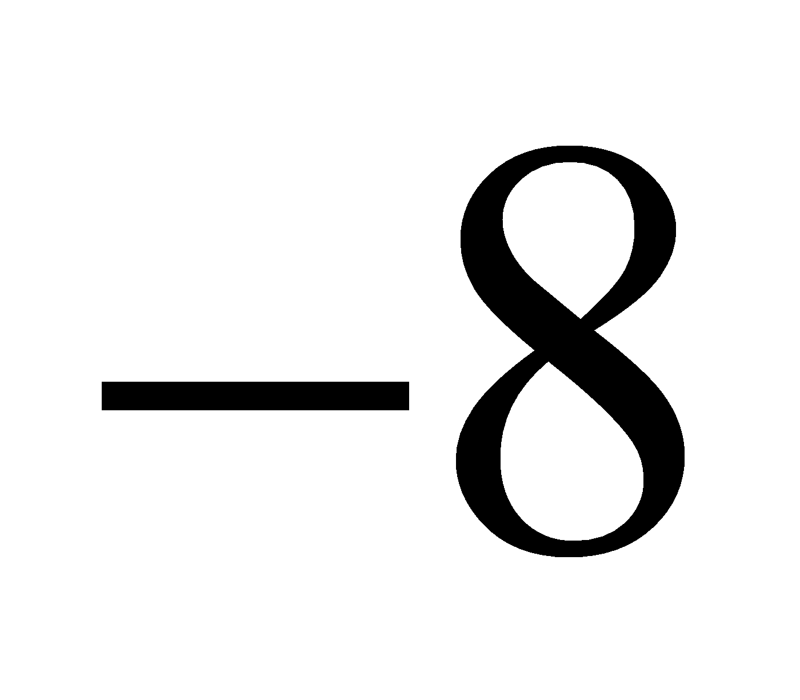
7 4
4【分析】本题考查多项式的项，解答本题需要我们掌握多项式中次数、项数的定义．
【详解】解：多项式的二次项系数是，三次项系数是7，常数项是，次数最高项的系数是4．
故答案为：，7，，4．
3．（23-24七年级下·黑龙江绥化·期中）多项式 是 次 项式，按
是 次 项式，按 的升幂排列为 ．
的升幂排列为 ．
【答案】 五 四
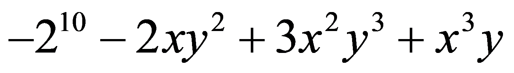
【分析】本题主要考查了多项式的定义及其次数的定义，解题的关键在于能够熟知相关定义：几个单项式的和的形式叫做多项式，每个单项式叫做多项式的项，不含字母的项叫做常数项，多项式里，次数最高项的次数叫做多项式的次数．
【详解】解：多项式是五次四项式，按的升幂排列为，
故答案为：五；四；
知识点04 整式
单项式与多项式统称为整式．
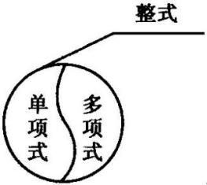
【注意】（1）单项式、多项式、整式这三者之间的关系如图所示．即单项式、多项式必是整式，但反过来就不一定成立．
（2）分母中含有字母的式子一定不是整式．
【即学即练4】
1．（23-24六年级下·黑龙江哈尔滨·期中）在代数式 ，
， ，
， ，
， ，
，
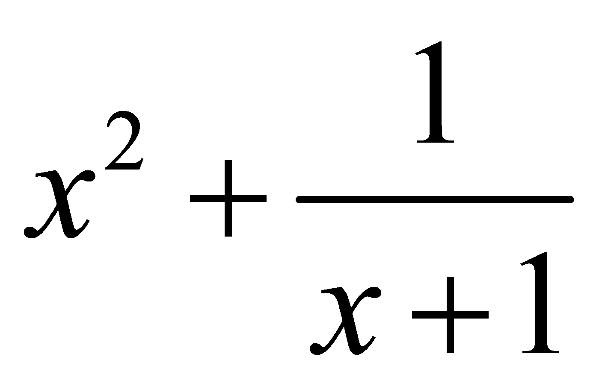
， 中，整式有（ ）
中，整式有（ ）A．3个 B．4个 C．5个 D．6个
【答案】B
【分析】本题考查了整式的定义，熟记定义是解本题的关键．根据整式包括单项式和多项式进行解答即可．单项式就是数与字母的乘积，以及单独的数与单独的字母都是单项式，几个单项式的和叫做多项式．
【详解】解：代数式，，，，，中，
整式有：，，，，共4个，
故选：B．
题型01 单项式的判断
【典例1】（23-24七年级上·江苏宿迁·期中）下列代数式中
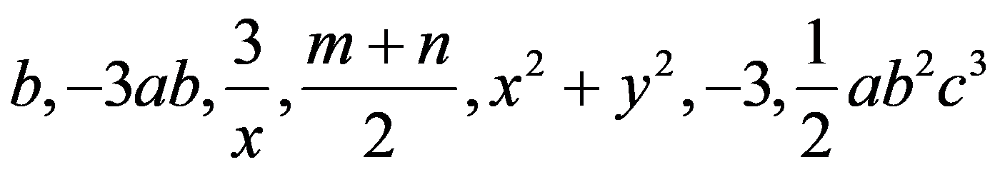
中，单项式共有（ ）A．6个 B．5个 C．4个 D．3个
【答案】C
【知识点】单项式的判断
【分析】本题主要考查了单项式的概念，不含有加减运算的整式叫做单项式，单独的一个数或一个字母也是单项式．根据单项式的定义解答即可．
【详解】解：在中单项式有：
b，
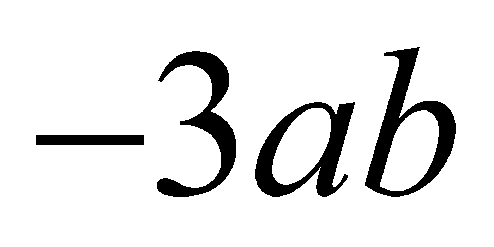
， ，
，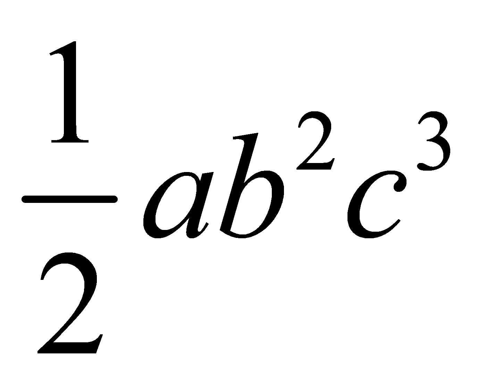
，共4个．故选：C．
【变式1】（23-24六年级下·黑龙江哈尔滨·期中）在代数式
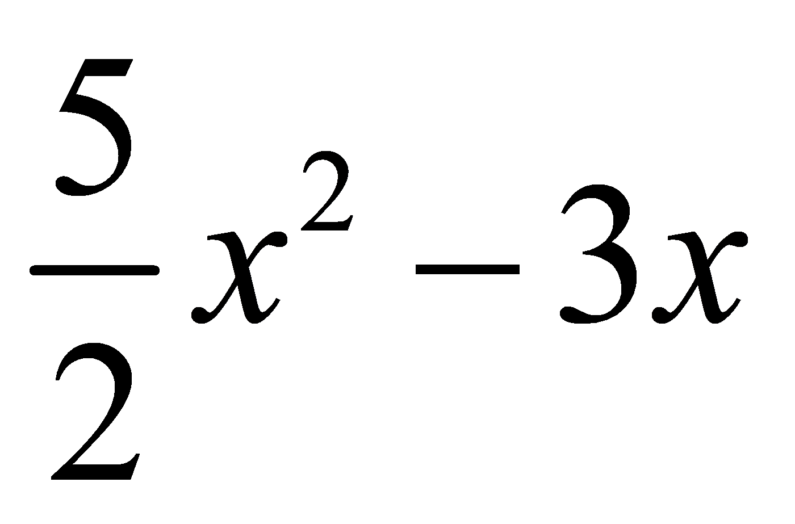
，，， ，
， 中，单项式的个数是（ ）个
中，单项式的个数是（ ）个A．2个 B．3个 C．4个 D．5个
【答案】B
【知识点】单项式的判断
【分析】本题考查单项式的概念，根据“数与字母的积的形式的代数式是单项式，单独的一个数或一个字母也是单项式”对上述代数式进行判断，即可解题．
【详解】解：根据单项式的定义，式子有减法运算，式子分母中含字母，都不是单项式，另外的，，都是单项式．
 单项式的个数是3个，
单项式的个数是3个，
故选：B．
【变式2】（23-24六年级上·山东烟台·期中）在代数式 ，
， ，
， ，
，
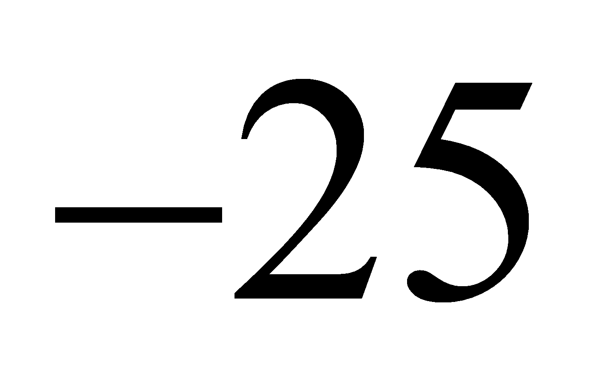
，x中，单项式的个数是（ ）A．1个 B．2个 C．3个 D．4个
【答案】C
【知识点】单项式的判断
【分析】本题考查了单项式的判断，由数和字母的积组成的代数式叫做单项式，单独的一个数或一个字母也叫做单项式．
【详解】解：由单项式的定义可知：，，x是单项式，
故选：Ｃ
题型02 单项式的系数、次数
【典例2】（23-24七年级上·江苏淮安·期中）单项式
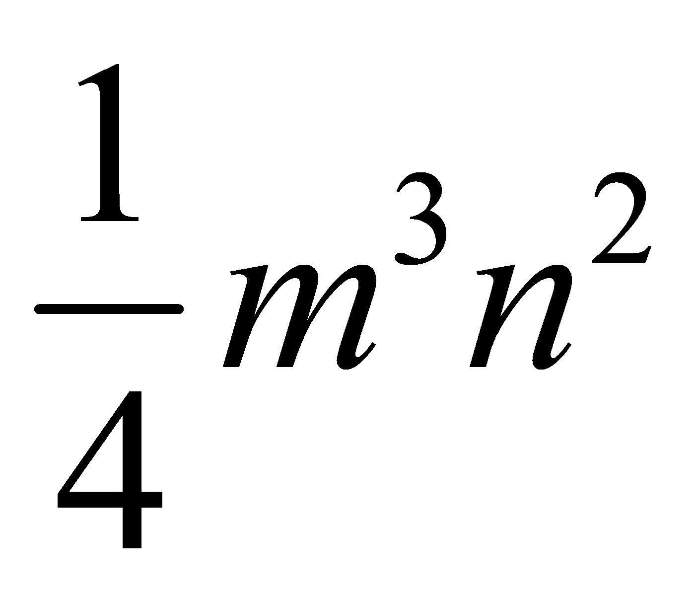
的次数是 ．【答案】5
【知识点】单项式的系数、次数
【分析】本题考查单项式次数的意义．根据单项式次数的意义即可得到答案．
【详解】解：单项式的次数是 ,
,
故答案为：5．
【变式1】（23-24六年级下·黑龙江哈尔滨·期中）单项式
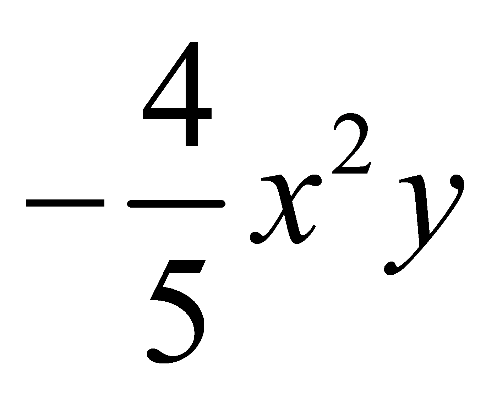
的次数是 ．【答案】3
【知识点】单项式的系数、次数
【分析】本题考查单项式的次数，根据单项式的次数是单项式中所有字母的指数和，进行求解即可．
【详解】解：单项式的次数是 次；
次；
故答案为：3．
【变式2】（23-24七年级上·江苏连云港·期中）单项式 的系数是 ，次数是 ．
的系数是 ，次数是 ．
【答案】  5
5
【知识点】单项式的系数、次数
【分析】本题考查了多项式的次数、系数，单项式前面的数字因数，就是单项式的系数；所有字母的指数之和，就是它的次数，根据单项式的系数和次数概念，即可求解．
【详解】解：单项式的系数是，次数是5，
故答案为：，5．
题型03 写出满足某些特征的单项式
【典例3】（23-24七年级下·广东东莞·期中）写出一个含有字母 、
、 的五次单项式： ．
的五次单项式： ．
【答案】
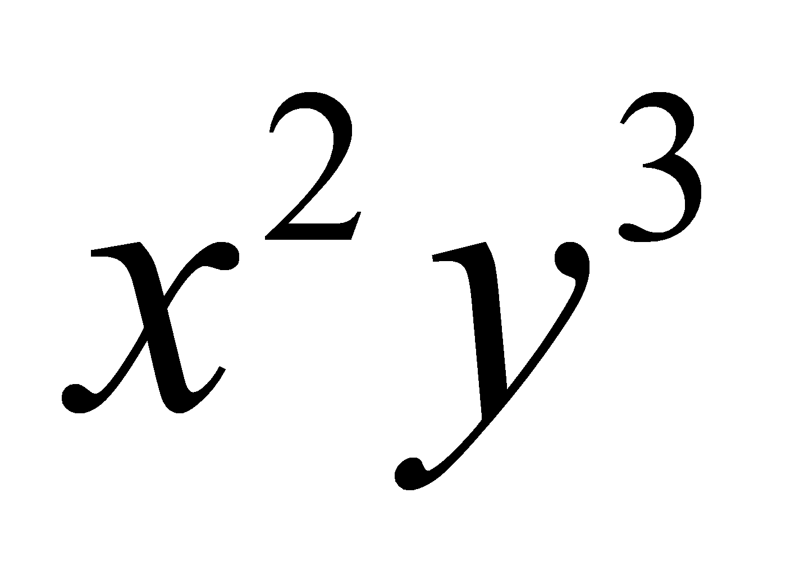
（答案不唯一）【知识点】写出满足某些特征的单项式
【分析】本题主要考查的是单项式的概念，单项式中所有字母的指数和就是单项式的次数，次数与单项式的数字因数没有关系，写的只要符合要求即可．
【详解】解：答案不唯一，含字母 的五次单项式是；
的五次单项式是；
故答案为：（答案不唯一）．
【变式1】（23-24七年级上·北京·期中）写出一个系数是1，次数是4的单项式 ．
【答案】
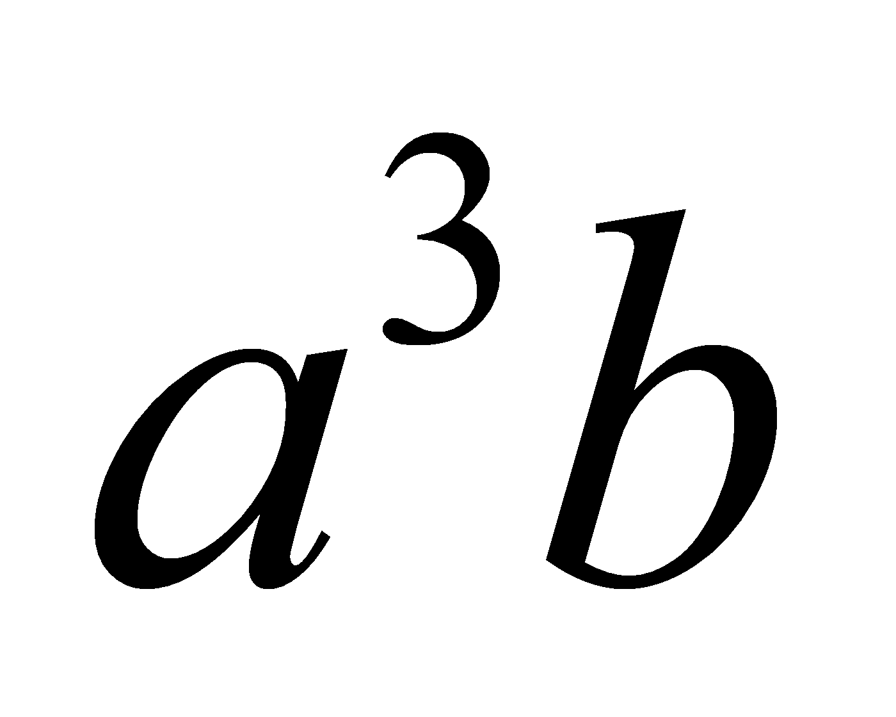
（答案不唯一）【知识点】写出满足某些特征的单项式
【分析】本题考查的是单项式的概念，掌握单项式中的数字因数叫做单项式的系数，一个单项式中所有字母的指数的和叫做单项式的次数是解题的关键．
根据单项式、单项式的系数和次数的概念解答即可．
【详解】解：依题意可得：（答案不唯一），
故答案为：．
【变式2】（23-24七年级上·福建莆田·期中）写出一个系数是 ，且只含x，y两个字母的三次单项式是 ．
，且只含x，y两个字母的三次单项式是 ．
【答案】
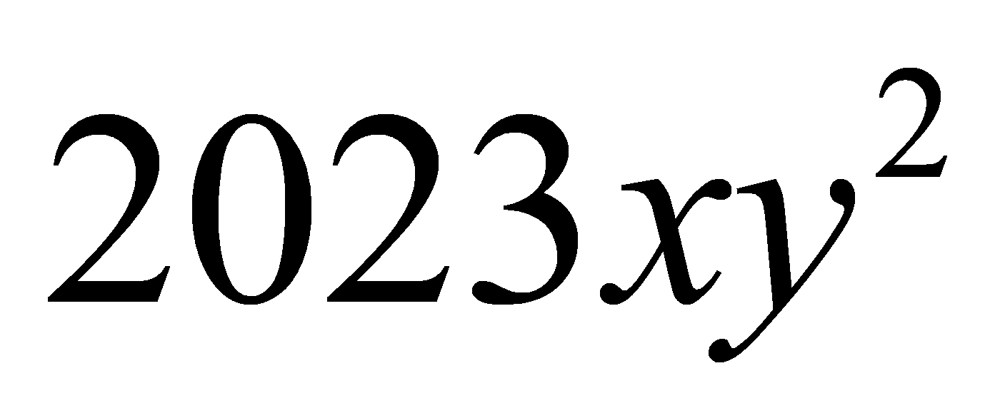
（答案不唯一）【知识点】写出满足某些特征的单项式
【分析】根据数或字母的积组成的式子叫做单项式可得答案．
【详解】解：由题意得：．
故答案为：（答案不唯一）．
【点睛】本题考查了单项式，掌握单项式的定义是关键．
题型04 单项式规律题
【典例4】（23-24六年级下·黑龙江大庆·期中）观察下列单项式： ，
，
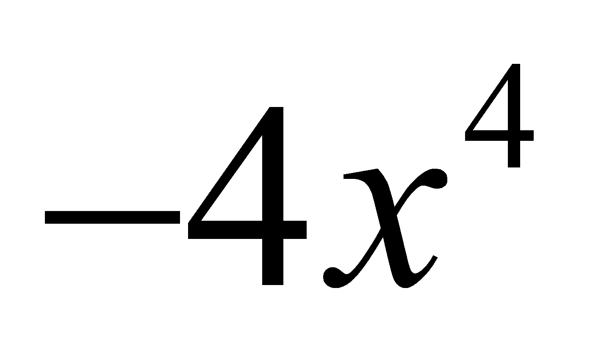
，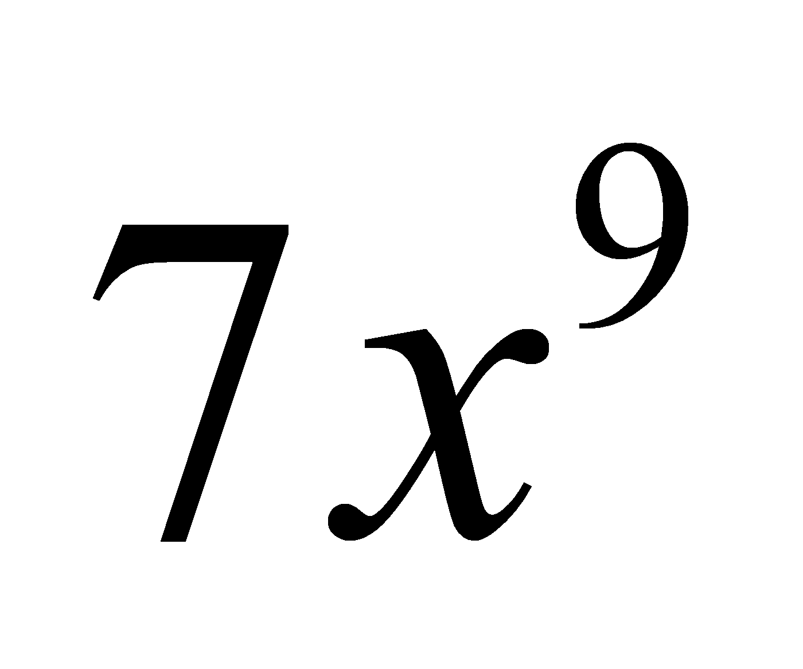
，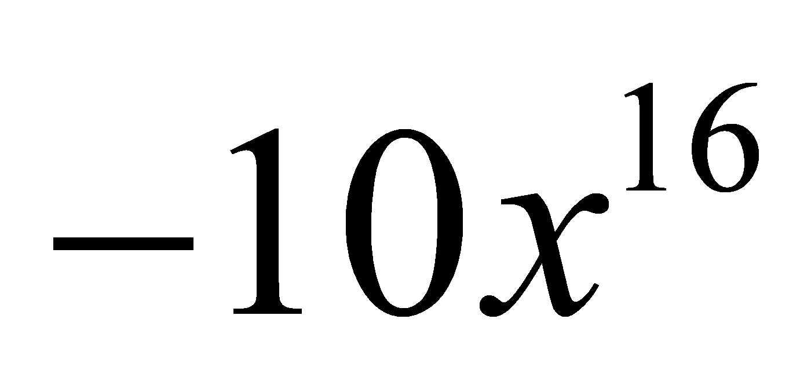
， 按规律可得第10个单项式是 ．
按规律可得第10个单项式是 ．【答案】
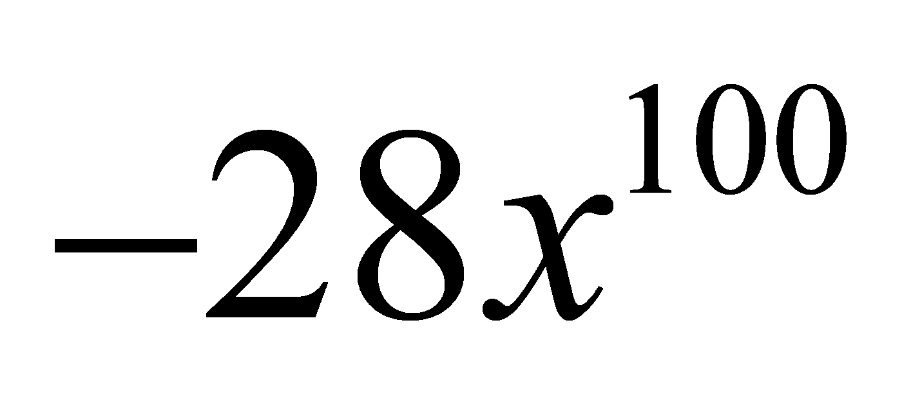
【知识点】单项式规律题
【分析】本题考查的是数字的变化规律，单项式．根据题意可得出一般规律：第 个单项式的数字符号为：
个单项式的数字符号为：
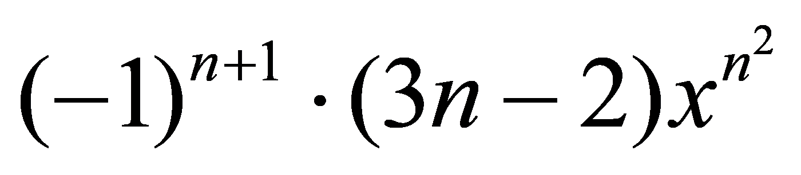
，因此当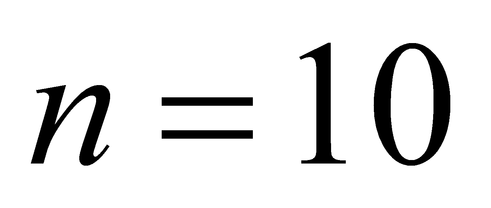
时，这个单项式是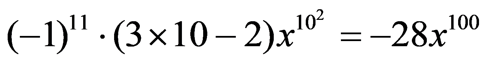
．【详解】解：由题意可知：
一列单项式为：，，，，
 第个单项式的数字符号为：，
第个单项式的数字符号为：，
当时，这个单项式是，
故答案为：．
【变式1】（23-24七年级上·湖北武汉·期中）有一组单项式： ，
， ，
， ，
， ，……则第2023个单项式是 ．
，……则第2023个单项式是 ．
【答案】
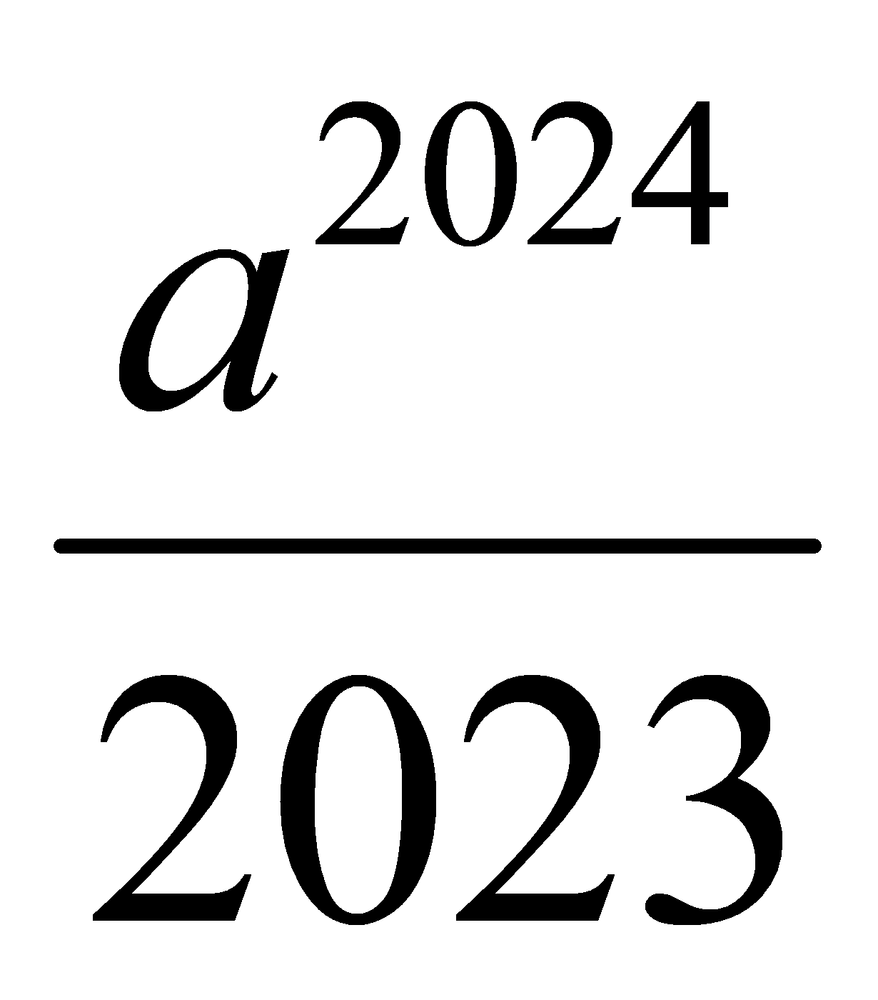
【知识点】单项式规律题
【分析】本题考查了单项式规律探究；分别从符号、分子、分母三个方面找出规律，奇数个的符号为正，分子为开始指数依次递增，分母为从1开始的整数，据此，即可求解．
【详解】解：，，，，……则第2023个单项式是，
故答案为：．
【变式2】（23-24七年级上·江西吉安·期中）按一定规律排列的单项式： 第n个单项式是 ．
第n个单项式是 ．
【答案】
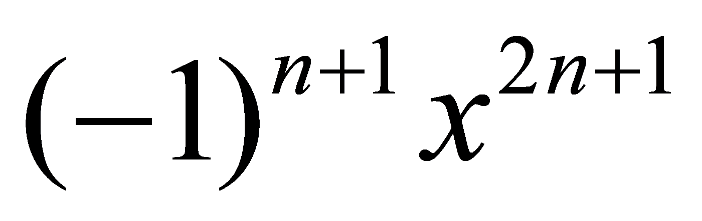
【知识点】单项式规律题
【分析】此题考查了整式规律问题的解决能力，关键是能准确理解题意，并进行规律的归纳．根据题意归纳出各项系数的符号和字母指数的规律．
【详解】解： 第1个单项式是
第1个单项式是
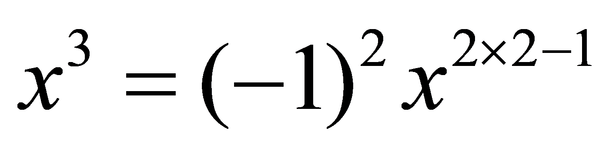
，第2个单项式是
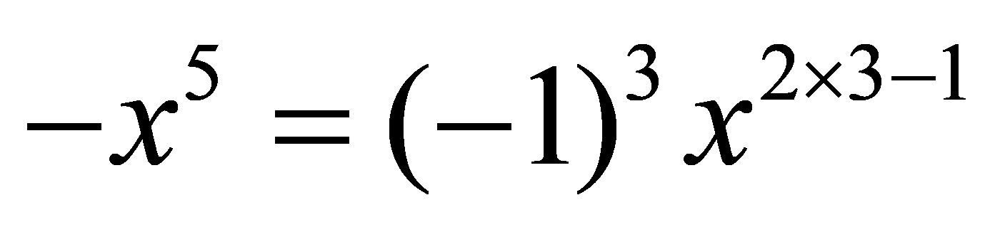
，第3个单项式是，
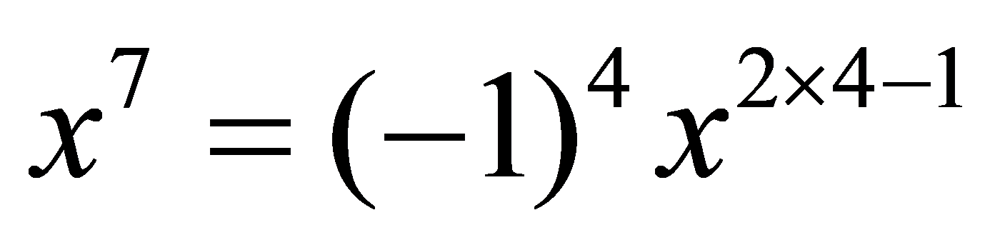
，第4个单项式是
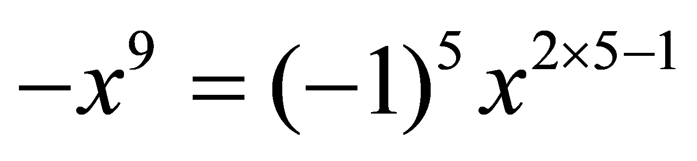
，
第个单项式是
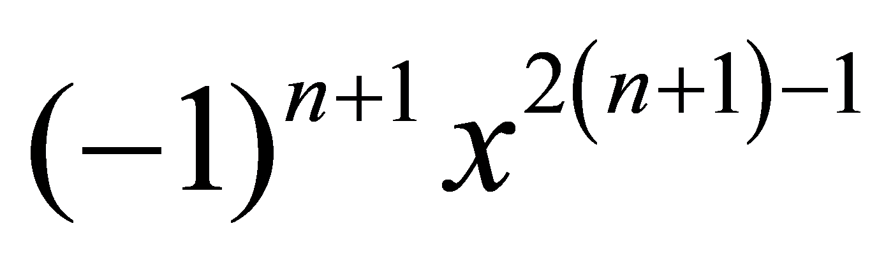
，即，故答案为：
题型05 多项式的判断
【典例5】（23-24七年级上·云南昆明·期中）代数式 ，
， ，
， ，
，
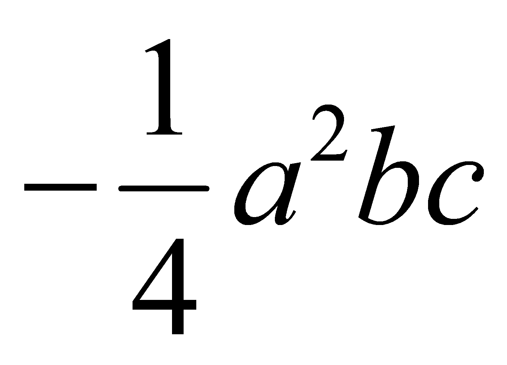
， 中，多项式的个数是（ ）
中，多项式的个数是（ ）A． B．
B． C．
C． D．
D．
【答案】A
【知识点】多项式的判断
【分析】本题主要考查了多项式的定义，根据多项式的定义：几个单项式的和求解即可，熟悉相关性质是解题的关键．
【详解】根据多项式的定义可知：，是多项式，共个，
故选： ．
．
【变式1】（23-24七年级上·重庆江北·期中）下列式子：① ；②0；③
；②0；③ ；④
；④ ；⑤；⑥
；⑤；⑥
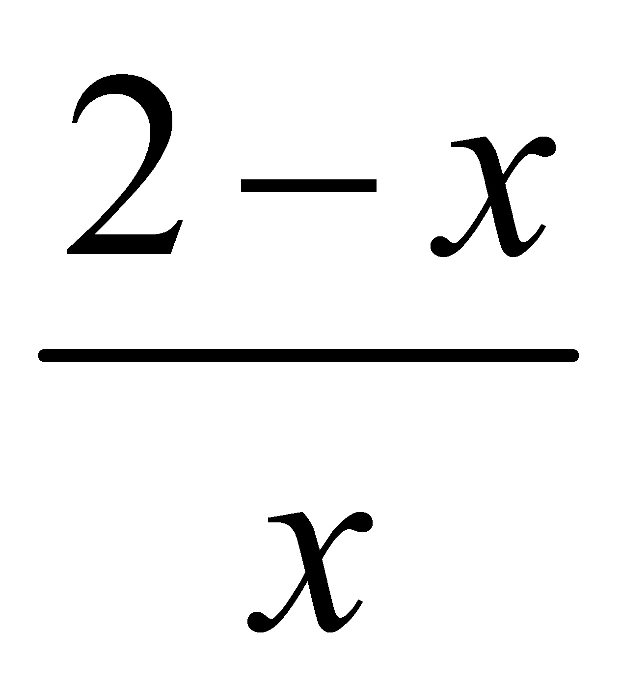
多项式的个数是（ ）A．1个 B．2个 C．3个 D．4个
【答案】B
【知识点】多项式的判断
【分析】本题主要考查了多项式的识别，表示数或字母的积的式子叫做单项式，几个单项式的和的形式叫做多项式，据此逐一判断即可．
【详解】解；①是多项式，符合题意；
②0不是多项式，不符合题意；
③不是多项式，不符合题意；
④不是多项式，不符合题意；
⑤是多项式，符合题意；
⑥不是多项式，不符合题意；
∴多项式一共有2个，
故选B．
【变式2】（23-24七年级上·湖北襄阳·期中）下列各式：2，，
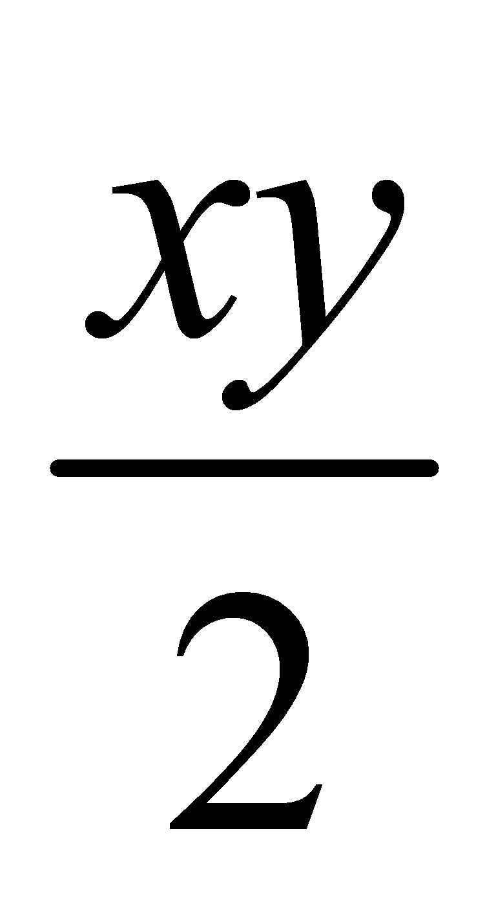
，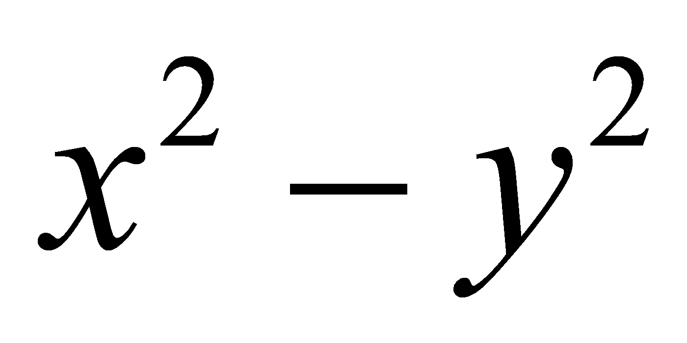
， ，其中多项式的个数是（ ）
，其中多项式的个数是（ ）A．2 B．3 C．4 D．5
【答案】A
【知识点】多项式的判断
【分析】本题主要考查了多项式的判断，熟知“几个单项式的和的形式叫做多项式”是解题的关键．
【详解】解：下列各式：2，，，，，其中多项式有，，共2个，
故选A．
题型06 多项式的项、项数或次数
【典例6】（23-24七年级上·山东青岛·期中）多项式
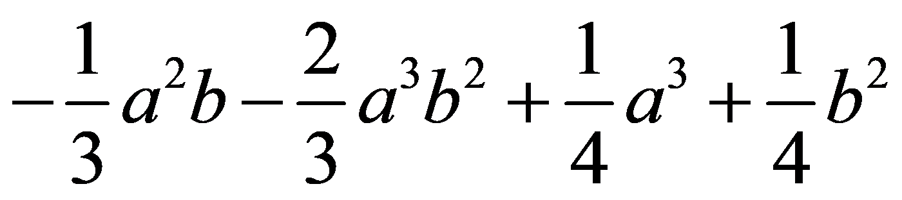
是 次四项式，第二项是 ，第二项的系数是 ．【答案】 五；
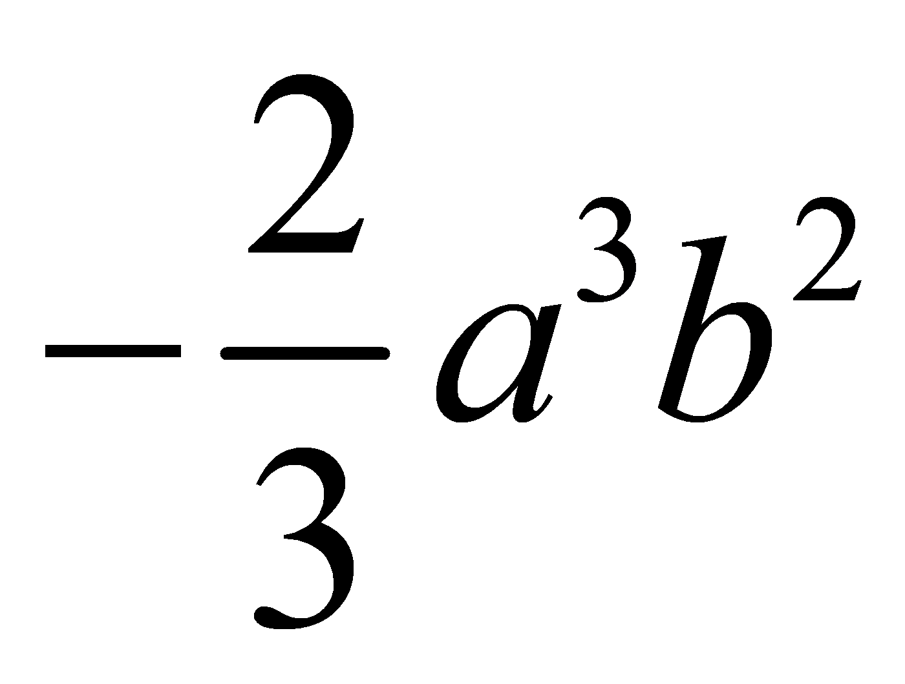
； ．
．【知识点】多项式的项、项数或次数
【分析】本题考查了多项式，根据多项式及次数的定义进行解答即可，掌握多项式的定义及有关概念是解题的关键．
【详解】解：是五次四项式，第二项是，第二项的系数是，
故答案为：五，，．
【变式1】（23-24七年级上·重庆沙坪坝·期中）多项式
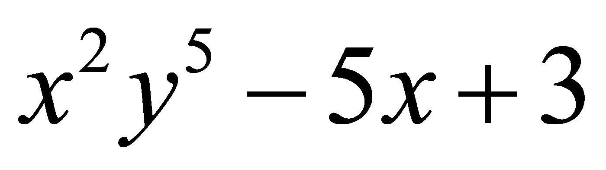
的项数为 一次项为 ．【答案】 3 
【知识点】多项式的项、项数或次数
【分析】此题考查了多项式的定义，解答本题的关键是掌握多项式次数及项数的判断方法．多项式中次数最高的项的次数叫做多项式的次数，多项式的每一项都是一个单项式，单项式的个数就是多项式的项数，进而可得出答案．
【详解】解：多项式有3个单项式组成，故项数是3；
一次项为．
故答案为3、．
【变式2】（23-24七年级上·山东德州·期中）多项式
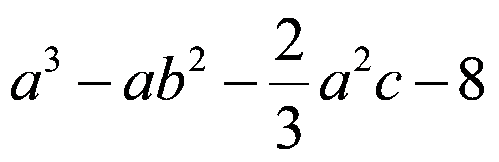
是 次 项式，它的常数项是 ．【答案】 三/3 四/4 
【知识点】多项式的项、项数或次数
【分析】根据多项式的项数：“单项式的个数”，次数：“最高项的次数”，常数项：“不含字母的项”，作答即可．
【详解】解：多项式是三次四项式，常数项是；
故答案为：三、四、．
题型07 多项式系数、指数中字母求值
【典例7】（23-24七年级上·湖北黄冈·期中）若多项式
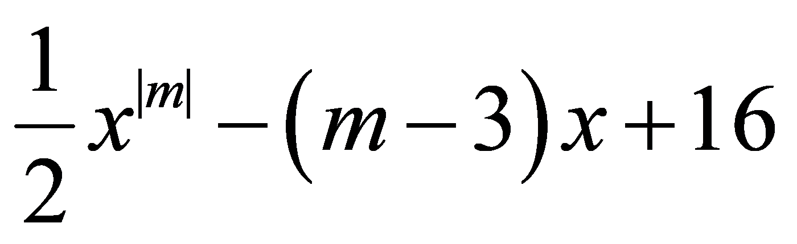
是关于x的三次三项式，则 ．
．【答案】
【知识点】多项式系数、指数中字母求值
【分析】根据多项式的项数：多项式中单项式的个数，以及多项式的次数：最高项的次数，列式计算即可．
【详解】解：由题意，得： 且
且 ，
，
∴ ；
；
故答案为：．
【变式1】（23-24七年级上·江苏南通·期中）若 是关于的二次三项式，那么
是关于的二次三项式，那么 的值为 ．
的值为 ．
【答案】
【知识点】多项式系数、指数中字母求值
【分析】本题主要考查了多项式项和次数的定义，几个单项式的和的形式叫做多项式，每个单项式叫做多项式的项，不含字母的项叫做常数项，多项式里，次数最高项的次数叫做多项式的次数，据此列式求解即可．
【详解】解；∵是关于的二次三项式，
∴
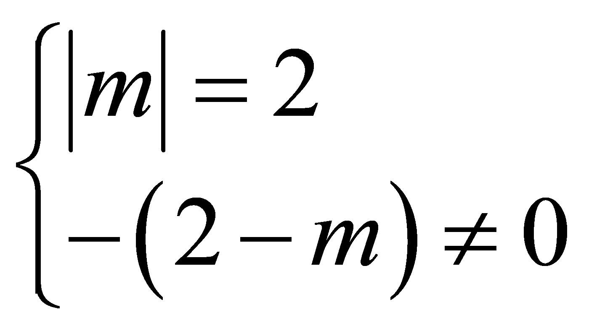
，∴ ，
，
故答案为：．
【变式2】（23-24七年级上·河南南阳·期中）已知 是关于，
是关于， 的四次三项式，常数项是，则
的四次三项式，常数项是，则 的值为 ．
的值为 ．
【答案】
【知识点】多项式系数、指数中字母求值
【分析】本题考查了多项式的相关概念，根据题意得出
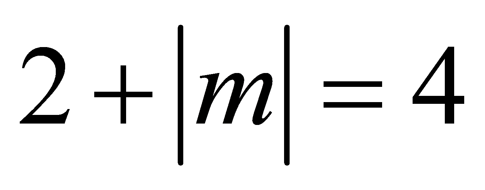
， ，，求出
，，求出 的值，再代入进行计算即可得到答案，熟练掌握几个单项式的和（或者差），叫做多项式，多项式中的每个单项式叫做多项式的项，这些单项式中的最高项次数，就是这个多项式的次数，其中多项式中不含字母的项叫做常数项，是解此题的关键．
的值，再代入进行计算即可得到答案，熟练掌握几个单项式的和（或者差），叫做多项式，多项式中的每个单项式叫做多项式的项，这些单项式中的最高项次数，就是这个多项式的次数，其中多项式中不含字母的项叫做常数项，是解此题的关键．【详解】解：是关于，的四次三项式，常数项是，
，，，
 ，
，
，
故答案为：．
题型08 将多项式按某个字母升幂(降幂)排列
【典例8】（23-24七年级上·上海青浦·期中）把多项式按字母的升幂排列是 ．
【答案】
【知识点】将多项式按某个字母升幂（降幂）排列
【分析】本题考查了将多项式按每个字母升幂（降幂）排列．
根据升幂排列的定义，我们把多项式的各项按照x的指数从小到大的顺序排列起来即可．
【详解】把多项式按字母的升幂排列是
故答案为：．
【变式1】（23-24七年级下·北京房山·期中）把多项式 按字母x降幂排列为
按字母x降幂排列为
【答案】
【知识点】将多项式按某个字母升幂（降幂）排列
【分析】本题考查了多项式，我们把一个多项式的各项按照某个字母的指数从大到小或从小到大的顺序排列，称为按这个字母的降幂或升幂排列．要注意，在排列多项式各项时，要保持其原有的符号．
【详解】解：多项式按字母x降幂排列为，
故答案为：．
【变式2】（23-24七年级上·吉林长春·期中）将多项式按的降幂排列： ．
【答案】
【知识点】将多项式按某个字母升幂（降幂）排列
【分析】本题考查了多项式的降幂排列，就是按照某一字母的指数由大到小的顺序排列，操作时注意带着每一项前面的符号．按照字母的指数由大到小排列即可．
【详解】解：将多项式按的降幂排列：，
故答案为：
题型09 整式的判断
【典例9】（23-24七年级上·广西柳州·期中）在代数式①；②；③；④2021；⑤；⑥ 中整式的个数有（ ）个．
中整式的个数有（ ）个．
A．5 B．4 C．3 D．2
【答案】B
【知识点】整式的判断
【分析】此题主要考查了整式，正确掌握整式的定义是解题关键．
根据单项式和多项式统称为整式，进而得出答案．
【详解】解：是整式的有，，2021，，
共四个，
故选：B
【变式1】（23-24七年级上·广东江门·期中）在式子 ，，，，，
，，，，， 中，整式的个数为（ ）
中，整式的个数为（ ）
A．2 B．3 C．4 D．5
【答案】D
【知识点】整式的判断
【分析】本题考查了整式的判断，根据单项式与多项式统称为整式，逐个式子分析判断即可求解．掌握整式的定义是解题的关键．
【详解】解：在式子，，，，，中，整式有，，，，，共5个，
故选：D．
【变式2】（23-24七年级上·江苏徐州·期中）下列式子：， ，0，
，0， ，
， ，整式的个数是（ ）
，整式的个数是（ ）
A．5 B．4 C．3 D．2
【答案】B
【知识点】整式的判断
【分析】本题考查了整式的识别，熟练掌握整式的概念是解答本题的关键．单项式和多项式统称为整式，不含有加减运算的整式叫做单项式，单独的一个数或一个字母也是单项式．几个单项式的和叫做多项式．据此求解即可．
【详解】解：是整式中的多项式，
是整式中的单项式，
0是整式中的单项式，
的分母含字母，不是整式，
是整式中的多项式，
故选：B．
一、单选题
1．（23-24七年级上·河南郑州·期末）下列代数式： ，，，
，，， ，
， ，中，单项式共有（ ）
，中，单项式共有（ ）
A． 个 B．
个 B． 个 C．
个 C． 个 D．
个 D． 个
个
【答案】C
【知识点】单项式的判断
【分析】本题考查的是单项式，数或字母的积组成的式子叫做单项式，单独的一个数或字母也是单项式．根据单项式的定义解答即可．
【详解】解：代数式：，，，，，中，，，，是单项式．共有个．
故选：C．
2．（23-24七年级上·贵州黔东南·期末）在下列各式：①； ②； ③； ④ ；⑤中，整式个数有（ ）
；⑤中，整式个数有（ ）
A．2 B．3 C．4 D．5
【答案】C
【知识点】整式的判断
【分析】本题考查整式的定义，单项式与多项式统称为整式，根据整式的概念逐项验证即可得到答案，熟记整式的定义是解决问题的关键．
【详解】解：①； ②； ③； ④；⑤中，整式有①； ②； ③；⑤；共4个，
故选：C．
3．（23-24七年级上·山东滨州·期末）下列结论中正确的是（ ）
A．单项式的系数是 ，次数是4 B．
，次数是4 B． 是多项式
是多项式
C．单项式m的次数是1，无系数 D．多项式 是二次三项式
是二次三项式
【答案】B
【知识点】多项式的判断、多项式的项、项数或次数、单项式的系数、次数
【分析】本题考查了单项式以及单、多项式的相关概念．几个单项式的和（或者差），叫做多项式．单项式的系数：单项式中的数字因数叫做这个单项式的系数；单项式的次数：一个单项式中,所有字母的指数的和叫做这个单项式的次数．一个多项式中，次数最高的项的次数，叫做这个多项式的次数；多项式的项数就是多项式中包含的单项式的个数．据此即可求解．
【详解】解：单项式的系数是，次数是，故A错误；
是多项式，故B正确；
单项式m的次数是1，系数是1，故Ｃ错误；
多项式是四次三项式，故D错误；
故选：B
4．（23-24七年级上·河南周口·阶段练习）如果多项式是关于x的二次二项式，那么a,b的值可能是（ ）
A．  B．
B．  C．
C．  D．
D． 
【答案】C
【知识点】多项式系数、指数中字母求值
【分析】此题考查了多项式的定义，多项式的项的定义及次数的定义，由此多余的项的系数应为0，据此解答．
【详解】∵多项式是关于x的二次二项式，
∴
得
故选C．
5．（23-24七年级上·河北唐山·阶段练习）一组按规律排列的式子 ，
， ，，
，， ，…按照上述规律，它的第n个式子（
，…按照上述规律，它的第n个式子（ 且n为整数）是（ ）
且n为整数）是（ ）
A． B．
C． D．
【答案】D
【知识点】单项式规律题
【分析】此题考查了单项式的变化规律，先根据分子、分母的变化得出规律，再根据分式符号的变化得出规律是解题的关键．
【详解】解：观察知，分母按1，3，5，7，．．．．．．排列，则第n个式子分母为 ；
；
分子按， ，
， ，，．．．．．排列，则第n个式子分子为；
，，．．．．．排列，则第n个式子分子为；
奇数个式子的符号为正，偶数个式子的符号为负，则第n个式子的符号为，
所以第n个式子为：
故选D．
二、填空题
6．（2024·广西河池·三模）写出一个系数为5，次数为3的单项式是 ．
【答案】（答案不唯一）
【知识点】写出满足某些特征的单项式
【分析】本题考查了单项式的知识，根据单项式的概念求解．
【详解】解：由题意，这个单项式可以为，
故答案为：（答案不唯一）．
7．（23-24七年级上·湖北荆门·单元测试）单项式的系数是 ，次数是 ．
【答案】 5
【知识点】单项式的系数、次数
【分析】根据单项式的次数的定义（一个单项式中，所有字母的指数的和叫做这个单项式的次数）和系数的定义（单项式中的数字因数叫做这个单项式的系数）即可得．本题考查了单项式的系数和次数，熟记定义是解题关键．
【详解】解：单项式的系数为，次数为，
故答案为：，5．
8．（23-24七年级上·吉林长春·阶段练习）将多项式按字母 的降幂排列为 ．
的降幂排列为 ．
【答案】
【知识点】将多项式按某个字母升幂（降幂）排列
【分析】本题考查了多项式的项的概念和降幂排列的概念．根据多项式项的概念和降幂排列的概念解答即可．
【详解】解：将多项式按字母的降幂排列为，
故答案为：．
9．（2024七年级上·全国·专题练习）下列各式①，② ，③，④
，③，④ ，⑤，⑥
，⑤，⑥ ，⑦
，⑦ ，⑧
，⑧ 中，是单项式的有 ，是多项式的有 ．（填序号）
中，是单项式的有 ，是多项式的有 ．（填序号）
【答案】 ①②⑥ ③④⑦
【知识点】单项式的判断、多项式的判断、整式的判断
【分析】本题考查单项式、多项式的概念，解决本题关键是搞清整式、单项式、多项式的概念．单项式是指只含乘法的式子，单独的字母或数字也是单项式；多项式：若干个单项式的代数和组成的式子；整式；单项式和多项式统称为整式；据此逐个分析即可求解．
【详解】解：单项式有：，，
多项式有：，，，
是不等式，是分式，故不属于整式；
故答案为：①②⑥；③④⑦．
10．（2024七年级上·全国·专题练习）观察下面的一列单项式： ，
， ，，
，， …根据规律，第16个单项式为 ．
…根据规律，第16个单项式为 ．
【答案】
【知识点】单项式规律题
【分析】本题考查了单项式的应用，解此题的关键是找出规律直接解答．
先根据所给单项式的次数及系数的关系可得单项式的系数为，次数为n，据此即可得到答案．
【详解】解： ,
,
，
，
，
第n个单项式为，
 第16个单项式为，
第16个单项式为，
故答案为：．
三、解答题
11．（23-24七年级上·湖南衡阳·期中）在代数式 ，，
，， ，
， ，
， ，中
，中
(1)单项式有：__________________．
(2)多项式有：__________________．
(3)将代数式按照b字母的降幂排列为：____________．
【答案】(1)，
(2)，，
(3)
【知识点】多项式的判断、单项式的判断、将多项式按某个字母升幂（降幂）排列
【分析】本题考查了整式的定义，掌握单项式和多项式统称整式；
（1）根据单项式的的定义进行选择；
（2）根据多项式的的定义进行选择；
（3）根据多项式按某个字母降幂排列的知识解决即可．
【详解】（1）解：单项式有：，；
故答案为：，；
（2）解：，，；
故答案为：，，；
（3）解：将代数式按照b字母的降幂排列为：，
故答案为：．
12．（23-24七年级上·吉林松原·期中）已知关于x、y的多项式 是六次五项式．
是六次五项式．
(1)m的值是______，该多项式的常数项是______；
(2)将此多项式按x的降幂排列．
【答案】(1)4；
(2)
【知识点】将多项式按某个字母升幂（降幂）排列、多项式系数、指数中字母求值
【分析】本题主要考查了多项式的次数和项的定义及按降幂排列，
（1）根据多项式的次数和多项式的项求m的值和常数项即可；
（2）将m值代入多项式并按x降幂排列即可．
【详解】（1）解：∵多项式是六次五项式，
∴，解得 ，且多项式的常数项是；
，且多项式的常数项是；
（2）根据（1）得多项式为，
∴按x的降幂排列为．
13．（23-24七年级上·山西临汾·期中）已知多项式 ．
．
(1)写出该多项式的第2项的系数和第4项的次数．
(2)求这个多项式中各项系数之和．
(3)若这个多项式的次数和单项式的次数相同，求k的值．
【答案】(1)第2项的系数为 ，第4项的次数为2
，第4项的次数为2
(2)
(3)
【知识点】单项式的系数、次数、多项式系数、指数中字母求值、多项式的项、项数或次数
【分析】（1）根据多项式的系数及某一项的次数的定义即可求解．
（2）先找出各项的系数，再相加即可求解．
（3）根据多项式的次数与单项式的次数相等得：，进而可求解．
【详解】（1）解：第2项的系数为，第4项的次数为2．
（2）根据题意得：
．
（3）多项式的次数为5，
所以，
解得：．
【点睛】本题考查了多项式的系数、次数及单项式的次数，熟练掌握基础知识是解题的关键．
14．（22-23七年级上·安徽六安·阶段练习）对下列式子进行分类．
 ．
．
单项式：（ ）；
多项式：（ ）；
整式：（ ）．
【答案】， ，
， ，；，，
，；，， ；，，，，，，
；，，，，，，
【知识点】多项式的判断、整式的判断、单项式的判断
【分析】单项式是指只含乘法的式子，单独的字母或数字也是单项式． 多项式：若干个单项式的代数和组成的式子．多项式中每个单项式叫做多项式的项，这些单项式中的最高次数，就是这个多项式的次数．不含字母的项叫做常数；整式：单项式和多项式统称为整式．
【详解】单项式：（，，，）
多项式：（，，）
是整式：（，，，，，，）
【点睛】本题考查整式、单项式、多项式的概念，熟练掌握相关的概念是解题的关键．
15．（24-25七年级上·全国·单元测试）观察下列关于的单项式： ，
， ，，，
，，，
(1)直接写出第个单项式：___________；
(2)第 个单项式的系数和次数分别是多少？
个单项式的系数和次数分别是多少？
(3)系数的绝对值为 的单项式的次数是多少？
的单项式的次数是多少？
【答案】(1)
(2)系数是，次数是
(3)
【知识点】单项式规律题
【分析】本题考查数字的变化规律，通过观察所给的单项式，探索出单项式的一般规律是解题的关键．
（1）根据所给的式子，直接写出即可；
（2）通过观察可得第 个单项式为，当
个单项式为，当 时，即可求解；
时，即可求解；
（3）由题意可得，求出，再由（2）的规律求解即可．
【详解】（1）解：第5个单项式为，
故答案为：；
（2）解：，，，，
第个单项式为，
第20个单项式为，
第20个单项式的系数是，次数是41；
（3）解：系数的绝对值为2025，
∴
，
次数为．